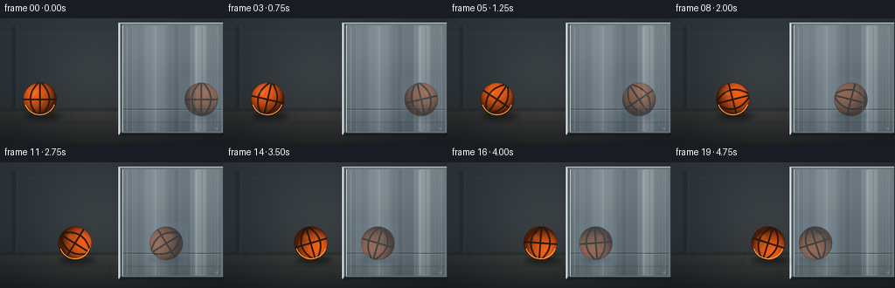
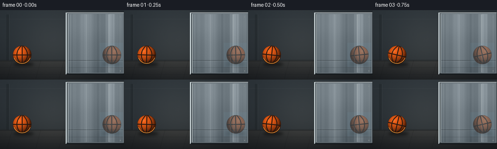

CODING AGENTS AS PIXEL WORLD MODELS
traex/GPT-5.6-Sol · phygen_064
点击播放 · 原生 RGB 像素
逐轮保存的候选
回放视频、检查图与代码变化。
每份候选均可单独播放。实际图片检查记录在下方工具轨迹中。
候选 01播放与检查图
点击播放 · 原生 RGB 像素

展开代码变化
--- 上一保存版本
+++ 本次保存版本
@@ -0,0 +1,214 @@
+from pathlib import Path
+import json, math
+import numpy as np
+from PIL import Image, ImageDraw, ImageFilter, ImageOps, ImageEnhance
+import artifact_io
+
+CASE_DIR = Path(__file__).resolve().parent
+SPEC = json.loads((CASE_DIR / 'task_spec.json').read_text())
+W, H = int(SPEC['width']), int(SPEC['height'])
+N, FPS = int(SPEC['frames']), float(SPEC['fps'])
+S = 4
+w, h = W*S, H*S
+rng = np.random.default_rng(6401)
+
+# Fixed background: a subdued studio/industrial room and floor.
+yy, xx = np.mgrid[0:h, 0:w]
+yn, xn = yy / h, xx / w
+horizon = int(105*S)
+base = np.zeros((h, w, 3), dtype=np.float32)
+wall = yy < horizon
+wall_lum = 1.0 - 0.27*yn - 0.08*xn
+base[..., 0] = 48*wall_lum
+base[..., 1] = 56*wall_lum
+base[..., 2] = 62*wall_lum
+floor_t = np.clip((yy-horizon)/(h-horizon), 0, 1)
+base[..., 0] = np.where(wall, base[...,0], 45 - 18*floor_t)
+base[..., 1] = np.where(wall, base[...,1], 47 - 17*floor_t)
+base[..., 2] = np.where(wall, base[...,2], 48 - 15*floor_t)
+# Soft pool of light around the action and a natural vignette.
+pool = np.exp(-(((xn-.43)/.45)**2 + ((yn-.52)/.72)**2)*2.1)
+base += pool[...,None] * np.array([16,15,13], np.float32)
+vig = 1.0 - .16*np.clip(((xn-.5)/.72)**2 + ((yn-.5)/.78)**2, 0, 1)
+base *= vig[...,None]
+# Fine stable sensor/material grain, generated from text only.
+grain = rng.normal(0, 1.25, (h,w,1))
+base += grain
+base = np.uint8(np.clip(base,0,255))
+background = Image.fromarray(base, 'RGB')
+d = ImageDraw.Draw(background, 'RGBA')
+# Wall architectural bands and floor contact line.
+d.rectangle((0, 18*S, w, 19*S), fill=(105,112,116,18))
+d.rectangle((0, 103*S, w, 106*S), fill=(14,17,19,90))
+d.line((0, 104*S, w, 104*S), fill=(118,119,115,34), width=S)
+# Distant vertical upright at far left adds spatial context.
+d.rectangle((13*S, 9*S, 19*S, 104*S), fill=(22,27,30,75))
+d.line((19*S, 9*S, 19*S, 104*S), fill=(102,111,114,45), width=S)
+# Floor slab seams in perspective.
+for y0, alpha in [(119,33),(133,24)]:
+ d.line((0,y0*S,w,y0*S), fill=(8,10,11,alpha), width=S)
+for xb in (25, 84, 132):
+ d.line((xb*S,104*S,(xb-11)*S,h), fill=(10,12,13,34), width=S)
+
+# Polished metal panel geometry. Its effective mirror plane is x=138 px.
+mirror_x = 138.0
+inner = (140*S, 8*S, 253*S, 130*S)
+# broad frame/drop shadow
+d.rounded_rectangle((135*S,4*S,256*S,134*S), radius=2*S, fill=(8,11,14,145))
+# metallic bevel frame
+d.rectangle((136*S,5*S,255*S,133*S), fill=(108,118,124,255))
+d.line((136*S,5*S,136*S,133*S), fill=(216,227,229,240), width=2*S)
+d.line((139*S,7*S,139*S,131*S), fill=(35,43,48,255), width=S)
+d.line((137*S,5*S,255*S,5*S), fill=(219,225,225,220), width=S)
+d.line((137*S,132*S,255*S,132*S), fill=(29,35,39,255), width=2*S)
+
+# Panel interior: reflective silver-blue, brighter toward the center.
+px0, py0, px1, py1 = inner
+ph, pw = py1-py0, px1-px0
+my, mx = np.mgrid[0:ph,0:pw]
+mxn = mx/max(1,pw-1); myn=my/max(1,ph-1)
+metal = np.empty((ph,pw,3),dtype=np.float32)
+stripe = (18*np.exp(-((mxn-.36)/.15)**2) + 29*np.exp(-((mxn-.79)/.075)**2)
+ -13*np.exp(-((mxn-.57)/.11)**2))
+vert = -17*myn + 5*np.exp(-((myn-.20)/.22)**2)
+for c, val in enumerate((111,122,129)):
+ metal[...,c] = val + stripe + vert
+# horizon and floor are visible in the reflection
+metal[myn > .79] -= ((myn[myn>.79,None]-.79)*48)
+# brushed vertical anisotropic texture
+brush_profile = rng.normal(0,1,pw)
+brush_profile = np.convolve(brush_profile, np.ones(17)/17, mode='same')*14
+metal += brush_profile[None,:,None]
+metal += rng.normal(0,.6,(ph,pw,1))
+metal_img = Image.fromarray(np.uint8(np.clip(metal,0,255)),'RGB')
+background.paste(metal_img,(px0,py0))
+d = ImageDraw.Draw(background,'RGBA')
+# reflected horizon/floor seams, subdued by the steel.
+d.line((140*S,104*S,253*S,104*S), fill=(46,55,60,170), width=S)
+d.line((140*S,105*S,253*S,105*S), fill=(184,191,191,38), width=S)
+d.line((140*S,119*S,253*S,119*S), fill=(42,48,51,60), width=S)
+# Slender specular streaks communicate brushed, shiny metal.
+for x0, col, wid in [(145,(235,244,244,38),1),(178,(239,248,248,27),2),
+ (224,(244,250,248,47),2),(231,(31,42,48,30),1),(249,(238,244,243,35),1)]:
+ d.line((x0*S,9*S,x0*S,129*S), fill=col, width=wid*S)
+# Frame fasteners.
+for cy in (13,125):
+ d.ellipse(((247*S),(cy*S),(249*S),((cy+2)*S)), fill=(37,44,48,210), outline=(204,211,211,130), width=S)
+
+
+def ball_sprite(radius, angle_deg):
+ """High-resolution, lit and pebbled basketball sprite."""
+ pad = 6*S
+ size = 2*radius + 2*pad
+ cy = cx = size//2
+ Y,X=np.mgrid[0:size,0:size]
+ u=(X-cx)/radius; v=(Y-cy)/radius
+ rr=u*u+v*v
+ inside=rr<=1
+ z=np.sqrt(np.clip(1-rr,0,1))
+ # Upper-left softbox lighting on an orange spherical material.
+ dot=np.clip(-.38*u-.53*v+.76*z,0,1)
+ rim=np.clip(1-z,0,1)
+ shade=.34+.68*dot-.16*rim
+ # tiny stable pebble modulation
+ peb = 0.035*np.sin(X*.59)*np.sin(Y*.53) + 0.018*np.cos(X*.31+Y*.19)
+ shade=np.clip(shade+peb, .24, 1.08)
+ arr=np.zeros((size,size,4),dtype=np.uint8)
+ arr[...,0]=np.where(inside,np.clip(229*shade+15,0,255),0)
+ arr[...,1]=np.where(inside,np.clip(93*shade+4,0,255),0)
+ arr[...,2]=np.where(inside,np.clip(24*shade,0,255),0)
+ # Soft antialiased silhouette at its edge.
+ edge=np.clip((1.015-np.sqrt(rr))*radius,0,1)
+ arr[...,3]=np.uint8(edge*255)
+ im=Image.fromarray(arr,'RGBA')
+ seam=Image.new('RGBA',(size,size),(0,0,0,0))
+ sd=ImageDraw.Draw(seam,'RGBA')
+ ink=(31,22,17,235); sw=max(S*2,5)
+ # Classic four-channel basketball construction.
+ sd.line((cx-radius,cy,cx+radius,cy),fill=ink,width=sw)
+ sd.line((cx,cy-radius,cx,cy+radius),fill=ink,width=sw)
+ pts=[]
+ for iy in np.linspace(-radius,radius,100):
+ q=iy/radius
+ ix=-.57*radius+.47*radius*q*q
+ pts.append((cx+ix,cy+iy))
+ sd.line(pts,fill=ink,width=sw,joint='curve')
+ pts2=[(2*cx-x,y) for x,y in pts]
+ sd.line(pts2,fill=ink,width=sw,joint='curve')
+ # Clip channels to sphere.
+ seam.putalpha(Image.composite(seam.getchannel('A'),Image.new('L',(size,size),0),im.getchannel('A')))
+ im=Image.alpha_composite(im,seam)
+ # Channels rotate with rolling translation.
+ im=im.rotate(angle_deg,resample=Image.Resampling.BICUBIC,center=(cx,cy))
+ # small glint after rotation, fixed to illumination rather than ball texture
+ gl=Image.new('RGBA',(size,size),(0,0,0,0)); gd=ImageDraw.Draw(gl,'RGBA')
+ gd.ellipse((cx-.47*radius,cy-.55*radius,cx-.15*radius,cy-.25*radius),fill=(255,214,145,28))
+ return Image.alpha_composite(im,gl)
+
+
+def paste_center(dst, sprite, cx, cy):
+ dst.alpha_composite(sprite,(int(round(cx-sprite.width/2)),int(round(cy-sprite.height/2))))
+
+frames=[]
+radius=19*S
+start_x,end_x=45.5,111.0
+ball_y=92.8
+for i in range(N):
+ t=i/(N-1)
+ # Smooth monotonic movement: starts and finishes naturally but never reverses.
+ ease=t*t*(3-2*t)
+ bx=start_x+(end_x-start_x)*ease
+ travel=bx-start_x
+ angle=-math.degrees(travel/19.0)
+ frame=background.convert('RGBA')
+ fd=ImageDraw.Draw(frame,'RGBA')
+ # Real contact shadow becomes slightly tighter as ball approaches the bright panel.
+ shx=bx*S+3*S
+ shadow=Image.new('RGBA',(w,h),(0,0,0,0))
+ sd=ImageDraw.Draw(shadow,'RGBA')
+ sd.ellipse(((shx-21*S),(108*S),(shx+21*S),(116*S)),fill=(0,0,0,126))
+ shadow=shadow.filter(ImageFilter.GaussianBlur(3*S))
+ frame=Image.alpha_composite(frame,shadow)
+
+ ball=ball_sprite(radius,angle)
+ # Exact planar reflection relation: equal center distance on the far side.
+ rx=(2*mirror_x-bx)*S
+ reflected=ImageOps.mirror(ball)
+ reflected=ImageEnhance.Color(reflected).enhance(.64)
+ reflected=ImageEnhance.Contrast(reflected).enhance(.82)
+ # Cool reflected light while retaining recognizable orange color.
+ tint=Image.new('RGBA',reflected.size,(112,154,176,38))
+ reflected=Image.alpha_composite(reflected,tint)
+ reflected.putalpha(reflected.getchannel('A').point(lambda a:int(a*.73)))
+ # Faint reflected contact shadow on the lower portion of the panel.
+ rshadow=Image.new('RGBA',(w,h),(0,0,0,0)); rs=ImageDraw.Draw(rshadow,'RGBA')
+ rs.ellipse((rx-20*S,108*S,rx+20*S,115*S),fill=(24,31,35,58))
+ rshadow=rshadow.filter(ImageFilter.GaussianBlur(3*S))
+ # Keep all reflected imagery inside the polished panel opening.
+ clip=Image.new('L',(w,h),0); ImageDraw.Draw(clip).rectangle(inner,fill=255)
+ rshadow.putalpha(Image.composite(rshadow.getchannel('A'),Image.new('L',(w,h),0),clip))
+ frame=Image.alpha_composite(frame,rshadow)
+ refl_layer=Image.new('RGBA',(w,h),(0,0,0,0))
+ paste_center(refl_layer,reflected,rx,ball_y*S)
+ refl_layer.putalpha(Image.composite(refl_layer.getchannel('A'),Image.new('L',(w,h),0),clip))
+ frame=Image.alpha_composite(frame,refl_layer)
+ # Subtle brushed streaks pass over the reflection, integrating it into the metal.
+ streak=Image.new('RGBA',(w,h),(0,0,0,0)); st=ImageDraw.Draw(streak,'RGBA')
+ for sx,a in [(151,19),(181,15),(218,22),(225,13),(246,16)]:
+ st.rectangle((sx*S,8*S,(sx*S)+S,130*S),fill=(235,245,245,a))
+ frame=Image.alpha_composite(frame,streak)
+ # Reassert mirror bevel in front of the virtual image.
+ fd=ImageDraw.Draw(frame,'RGBA')
+ fd.line((139*S,7*S,139*S,131*S),fill=(30,38,43,255),width=S)
+ fd.line((140*S,8*S,140*S,130*S),fill=(211,220,220,115),width=S)
+ # Real basketball always sits in front of the room, left of the surface.
+ paste_center(frame,ball,bx*S,ball_y*S)
+ # Contact-darkening anchors it to the floor without obscuring its edge.
+ fd=ImageDraw.Draw(frame,'RGBA')
+ fd.arc(((bx-18)*S,(ball_y-18)*S,(bx+18)*S,(ball_y+18)*S),20,160,fill=(255,172,71,55),width=S)
+ out=frame.convert('RGB').resize((W,H),Image.Resampling.LANCZOS)
+ frames.append(np.asarray(out,dtype=np.uint8))
+
+frames=np.stack(frames,axis=0)
+artifact_io.save(frames,CASE_DIR)
+print(f'saved {len(frames)} RGB frames at {W}x{H}, {FPS:g} fps')
候选 02播放与检查图
点击播放 · 原生 RGB 像素


展开代码变化
--- 上一保存版本
+++ 本次保存版本
@@ -177,9 +177,12 @@
reflected=ImageEnhance.Color(reflected).enhance(.64)
reflected=ImageEnhance.Contrast(reflected).enhance(.82)
# Cool reflected light while retaining recognizable orange color.
- tint=Image.new('RGBA',reflected.size,(112,154,176,38))
- reflected=Image.alpha_composite(reflected,tint)
- reflected.putalpha(reflected.getchannel('A').point(lambda a:int(a*.73)))
+ refl_arr=np.asarray(reflected).copy()
+ original_alpha=refl_arr[...,3].copy()
+ tint_rgb=np.array([112,154,176],dtype=np.float32)
+ refl_arr[...,:3]=np.uint8(np.clip(refl_arr[...,:3]*.85+tint_rgb*.15,0,255))
+ refl_arr[...,3]=np.uint8(original_alpha.astype(np.float32)*.73)
+ reflected=Image.fromarray(refl_arr)
# Faint reflected contact shadow on the lower portion of the panel.
rshadow=Image.new('RGBA',(w,h),(0,0,0,0)); rs=ImageDraw.Draw(rshadow,'RGBA')
rs.ellipse((rx-20*S,108*S,rx+20*S,115*S),fill=(24,31,35,58))
候选 03播放与检查图
可观测工具轨迹
实际执行的命令与返回图片。
命令 1exit 0
/bin/bash -lc "cat prompt.txt && printf '\\n--- GENERATION_RULES.md ---\\n' && cat GENERATION_RULES.md"
命令 2exit 0
/bin/bash -lc "cat task_spec.json && printf '\\n--- FILES ---\\n' && find . -maxdepth 2 -type f -printf '%p\\n' | sort"
命令 3exit 0
/bin/bash -lc "which ffmpeg || true; which blender || true; python3 - <<'PY' mods=['numpy','PIL','cv2','imageio','scipy'] for m in mods: try: x=__import__(m); print(m, getattr(x,'__version__','ok')) except Exception as e: print(m,'MISSING',e) PY"
命令 4exit 0
/bin/bash -lc "sed -n '1,240p' artifact_io.py"
命令 5exit 0
/bin/bash -lc "sed -n '1,220p' player_template.html"
命令 6exit 0
/bin/bash -lc "cat > generate.py <<'PY'
from pathlib import Path
import json, math
import numpy as np
from PIL import Image, ImageDraw, ImageFilter, ImageOps, ImageEnhance
import artifact_io
CASE_DIR = Path(__file__).resolve().parent
SPEC = json.loads((CASE_DIR / 'task_spec.json').read_text())
W, H = int(SPEC['width']), int(SPEC['height'])
N, FPS = int(SPEC['frames']), float(SPEC['fps'])
S = 4
w, h = W*S, H*S
rng = np.random.default_rng(6401)
# Fixed background: a subdued studio/industrial room and floor.
yy, xx = np.mgrid[0:h, 0:w]
yn, xn = yy / h, xx / w
horizon = int(105*S)
base = np.zeros((h, w, 3), dtype=np.float32)
wall = yy < horizon
wall_lum = 1.0 - 0.27*yn - 0.08*xn
base[..., 0] = 48*wall_lum
base[..., 1] = 56*wall_lum
base[..., 2] = 62*wall_lum
floor_t = np.clip((yy-horizon)/(h-horizon), 0, 1)
base[..., 0] = np.where(wall, base[...,0], 45 - 18*floor_t)
base[..., 1] = np.where(wall, base[...,1], 47 - 17*floor_t)
base[..., 2] = np.where(wall, base[...,2], 48 - 15*floor_t)
# Soft pool of light around the action and a natural vignette.
pool = np.exp(-(((xn-.43)/.45)**2 + ((yn-.52)/.72)**2)*2.1)
base += pool[...,None] * np.array([16,15,13], np.float32)
vig = 1.0 - .16*np.clip(((xn-.5)/.72)**2 + ((yn-.5)/.78)**2, 0, 1)
base *= vig[...,None]
# Fine stable sensor/material grain, generated from text only.
grain = rng.normal(0, 1.25, (h,w,1))
base += grain
base = np.uint8(np.clip(base,0,255))
background = Image.fromarray(base, 'RGB')
d = ImageDraw.Draw(background, 'RGBA')
# Wall architectural bands and floor contact line.
d.rectangle((0, 18*S, w, 19*S), fill=(105,112,116,18))
d.rectangle((0, 103*S, w, 106*S), fill=(14,17,19,90))
d.line((0, 104*S, w, 104*S), fill=(118,119,115,34), width=S)
# Distant vertical upright at far left adds spatial context.
d.rectangle((13*S, 9*S, 19*S, 104*S), fill=(22,27,30,75))
d.line((19*S, 9*S, 19*S, 104*S), fill=(102,111,114,45), width=S)
# Floor slab seams in perspective.
for y0, alpha in [(119,33),(133,24)]:
d.line((0,y0*S,w,y0*S), fill=(8,10,11,alpha), width=S)
for xb in (25, 84, 132):
d.line((xb*S,104*S,(xb-11)*S,h), fill=(10,12,13,34), width=S)
# Polished metal panel geometry. Its effective mirror plane is x=138 px.
mirror_x = 138.0
inner = (140*S, 8*S, 253*S, 130*S)
# broad frame/drop shadow
d.rounded_rectangle((135*S,4*S,256*S,134*S), radius=2*S, fill=(8,11,14,145))
# metallic bevel frame
d.rectangle((136*S,5*S,255*S,133*S), fill=(108,118,124,255))
d.line((136*S,5*S,136*S,133*S), fill=(216,227,229,240), width=2*S)
d.line((139*S,7*S,139*S,131*S), fill=(35,43,48,255), width=S)
d.line((137*S,5*S,255*S,5*S), fill=(219,225,225,220), width=S)
d.line((137*S,132*S,255*S,132*S), fill=(29,35,39,255), width=2*S)
# Panel interior: reflective silver-blue, brighter toward the center.
px0, py0, px1, py1 = inner
ph, pw = py1-py0, px1-px0
my, mx = np.mgrid[0:ph,0:pw]
mxn = mx/max(1,pw-1); myn=my/max(1,ph-1)
metal = np.empty((ph,pw,3),dtype=np.float32)
stripe = (18*np.exp(-((mxn-.36)/.15)**2) + 29*np.exp(-((mxn-.79)/.075)**2)
-13*np.exp(-((mxn-.57)/.11)**2))
vert = -17*myn + 5*np.exp(-((myn-.20)/.22)**2)
for c, val in enumerate((111,122,129)):
metal[...,c] = val + stripe + vert
# horizon and floor are visible in the reflection
metal[myn > .79] -= ((myn[myn>.79,None]-.79)*48)
# brushed vertical anisotropic texture
brush_profile = rng.normal(0,1,pw)
brush_profile = np.convolve(brush_profile, np.ones(17)/17, mode='same')*14
metal += brush_profile[None,:,None]
metal += rng.normal(0,.6,(ph,pw,1))
metal_img = Image.fromarray(np.uint8(np.clip(metal,0,255)),'RGB')
background.paste(metal_img,(px0,py0))
d = ImageDraw.Draw(background,'RGBA')
# reflected horizon/floor seams, subdued by the steel.
d.line((140*S,104*S,253*S,104*S), fill=(46,55,60,170), width=S)
d.line((140*S,105*S,253*S,105*S), fill=(184,191,191,38), width=S)
d.line((140*S,119*S,253*S,119*S), fill=(42,48,51,60), width=S)
# Slender specular streaks communicate brushed, shiny metal.
for x0, col, wid in [(145,(235,244,244,38),1),(178,(239,248,248,27),2),
(224,(244,250,248,47),2),(231,(31,42,48,30),1),(249,(238,244,243,35),1)]:
d.line((x0*S,9*S,x0*S,129*S), fill=col, width=wid*S)
# Frame fasteners.
for cy in (13,125):
d.ellipse(((247*S),(cy*S),(249*S),((cy+2)*S)), fill=(37,44,48,210), outline=(204,211,211,130), width=S)
def ball_sprite(radius, angle_deg):
\"\"\"High-resolution, lit and pebbled basketball sprite.\"\"\"
pad = 6*S
size = 2*radius + 2*pad
cy = cx = size//2
Y,X=np.mgrid[0:size,0:size]
u=(X-cx)/radius; v=(Y-cy)/radius
rr=u*u+v*v
inside=rr<=1
z=np.sqrt(np.clip(1-rr,0,1))
# Upper-left softbox lighting on an orange spherical material.
dot=np.clip(-.38*u-.53*v+.76*z,0,1)
rim=np.clip(1-z,0,1)
shade=.34+.68*dot-.16*rim
# tiny stable pebble modulation
peb = 0.035*np.sin(X*.59)*np.sin(Y*.53) + 0.018*np.cos(X*.31+Y*.19)
shade=np.clip(shade+peb, .24, 1.08)
arr=np.zeros((size,size,4),dtype=np.uint8)
arr[...,0]=np.where(inside,np.clip(229*shade+15,0,255),0)
arr[...,1]=np.where(inside,np.clip(93*shade+4,0,255),0)
arr[...,2]=np.where(inside,np.clip(24*shade,0,255),0)
# Soft antialiased silhouette at its edge.
edge=np.clip((1.015-np.sqrt(rr))*radius,0,1)
arr[...,3]=np.uint8(edge*255)
im=Image.fromarray(arr,'RGBA')
seam=Image.new('RGBA',(size,size),(0,0,0,0))
sd=ImageDraw.Draw(seam,'RGBA')
ink=(31,22,17,235); sw=max(S*2,5)
# Classic four-channel basketball construction.
sd.line((cx-radius,cy,cx+radius,cy),fill=ink,width=sw)
sd.line((cx,cy-radius,cx,cy+radius),fill=ink,width=sw)
pts=[]
for iy in np.linspace(-radius,radius,100):
q=iy/radius
ix=-.57*radius+.47*radius*q*q
pts.append((cx+ix,cy+iy))
sd.line(pts,fill=ink,width=sw,joint='curve')
pts2=[(2*cx-x,y) for x,y in pts]
sd.line(pts2,fill=ink,width=sw,joint='curve')
# Clip channels to sphere.
seam.putalpha(Image.composite(seam.getchannel('A'),Image.new('L',(size,size),0),im.getchannel('A')))
im=Image.alpha_composite(im,seam)
# Channels rotate with rolling translation.
im=im.rotate(angle_deg,resample=Image.Resampling.BICUBIC,center=(cx,cy))
# small glint after rotation, fixed to illumination rather than ball texture
gl=Image.new('RGBA',(size,size),(0,0,0,0)); gd=ImageDraw.Draw(gl,'RGBA')
gd.ellipse((cx-.47*radius,cy-.55*radius,cx-.15*radius,cy-.25*radius),fill=(255,214,145,28))
return Image.alpha_composite(im,gl)
def paste_center(dst, sprite, cx, cy):
dst.alpha_composite(sprite,(int(round(cx-sprite.width/2)),int(round(cy-sprite.height/2))))
frames=[]
radius=19*S
start_x,end_x=45.5,111.0
ball_y=92.8
for i in range(N):
t=i/(N-1)
# Smooth monotonic movement: starts and finishes naturally but never reverses.
ease=t*t*(3-2*t)
bx=start_x+(end_x-start_x)*ease
travel=bx-start_x
angle=-math.degrees(travel/19.0)
frame=background.convert('RGBA')
fd=ImageDraw.Draw(frame,'RGBA')
# Real contact shadow becomes slightly tighter as ball approaches the bright panel.
shx=bx*S+3*S
shadow=Image.new('RGBA',(w,h),(0,0,0,0))
sd=ImageDraw.Draw(shadow,'RGBA')
sd.ellipse(((shx-21*S),(108*S),(shx+21*S),(116*S)),fill=(0,0,0,126))
shadow=shadow.filter(ImageFilter.GaussianBlur(3*S))
frame=Image.alpha_composite(frame,shadow)
ball=ball_sprite(radius,angle)
# Exact planar reflection relation: equal center distance on the far side.
rx=(2*mirror_x-bx)*S
reflected=ImageOps.mirror(ball)
reflected=ImageEnhance.Color(reflected).enhance(.64)
reflected=ImageEnhance.Contrast(reflected).enhance(.82)
# Cool reflected light while retaining recognizable orange color.
tint=Image.new('RGBA',reflected.size,(112,154,176,38))
reflected=Image.alpha_composite(reflected,tint)
reflected.putalpha(reflected.getchannel('A').point(lambda a:int(a*.73)))
# Faint reflected contact shadow on the lower portion of the panel.
rshadow=Image.new('RGBA',(w,h),(0,0,0,0)); rs=ImageDraw.Draw(rshadow,'RGBA')
rs.ellipse((rx-20*S,108*S,rx+20*S,115*S),fill=(24,31,35,58))
rshadow=rshadow.filter(ImageFilter.GaussianBlur(3*S))
# Keep all reflected imagery inside the polished panel opening.
clip=Image.new('L',(w,h),0); ImageDraw.Draw(clip).rectangle(inner,fill=255)
rshadow.putalpha(Image.composite(rshadow.getchannel('A'),Image.new('L',(w,h),0),clip))
frame=Image.alpha_composite(frame,rshadow)
refl_layer=Image.new('RGBA',(w,h),(0,0,0,0))
paste_center(refl_layer,reflected,rx,ball_y*S)
refl_layer.putalpha(Image.composite(refl_layer.getchannel('A'),Image.new('L',(w,h),0),clip))
frame=Image.alpha_composite(frame,refl_layer)
# Subtle brushed streaks pass over the reflection, integrating it into the metal.
streak=Image.new('RGBA',(w,h),(0,0,0,0)); st=ImageDraw.Draw(streak,'RGBA')
for sx,a in [(151,19),(181,15),(218,22),(225,13),(246,16)]:
st.rectangle((sx*S,8*S,(sx*S)+S,130*S),fill=(235,245,245,a))
frame=Image.alpha_composite(frame,streak)
# Reassert mirror bevel in front of the virtual image.
fd=ImageDraw.Draw(frame,'RGBA')
fd.line((139*S,7*S,139*S,131*S),fill=(30,38,43,255),width=S)
fd.line((140*S,8*S,140*S,130*S),fill=(211,220,220,115),width=S)
# Real basketball always sits in front of the room, left of the surface.
paste_center(frame,ball,bx*S,ball_y*S)
# Contact-darkening anchors it to the floor without obscuring its edge.
fd=ImageDraw.Draw(frame,'RGBA')
fd.arc(((bx-18)*S,(ball_y-18)*S,(bx+18)*S,(ball_y+18)*S),20,160,fill=(255,172,71,55),width=S)
out=frame.convert('RGB').resize((W,H),Image.Resampling.LANCZOS)
frames.append(np.asarray(out,dtype=np.uint8))
frames=np.stack(frames,axis=0)
artifact_io.save(frames,CASE_DIR)
print(f'saved {len(frames)} RGB frames at {W}x{H}, {FPS:g} fps')
PY
python3 generate.py
ls -lh pixels.npz inspection.png transition_check.png index.html frames/00.png frames/19.png"命令 7exit 0
/bin/bash -lc 'python3 -m py_compile generate.py artifact_io.py'
命令 8exit 0
/bin/bash -lc "python3 generate.py && python3 - <<'PY'
from pathlib import Path
import numpy as np
from PIL import Image
z=np.load('pixels.npz')['pixels']
assert z.shape==(144,256,20), z.shape
assert len(list(Path('frames').glob('*.png')))==20
for p in sorted(Path('frames').glob('*.png')):
im=Image.open(p)
assert im.mode=='RGB' and im.size==(256,144), (p,im.mode,im.size)
# report temporal activity and orange-object x centroids in real/reflected regions
xs=[]; rxs=[]
for p in sorted(Path('frames').glob('*.png')):
a=np.asarray(Image.open(p)).astype(int)
mask=(a[:,:,0]>125)&(a[:,:,0]>a[:,:,1]*1.45)&(np.indices(a.shape[:2])[1]<138)
maskr=(a[:,:,0]>95)&(a[:,:,0]>a[:,:,1]*1.15)&(np.indices(a.shape[:2])[1]>140)
xs.append(round(np.where(mask)[1].mean(),2))
rxs.append(round(np.where(maskr)[1].mean(),2))
print('pixels',z.shape,z.dtype,'frame RGB validation passed')
print('real ball x:',xs)
print('reflection x:',rxs)
print('changed pixel counts:',[int(np.count_nonzero(z[:,:,i]"'!=z[:,:,i-1])) for i in range(1,20)])
PY'保存候选 3 份；完成命令 8 次；可验证图片返回 0 张。原始 API 响应与完整日志保留在本地。